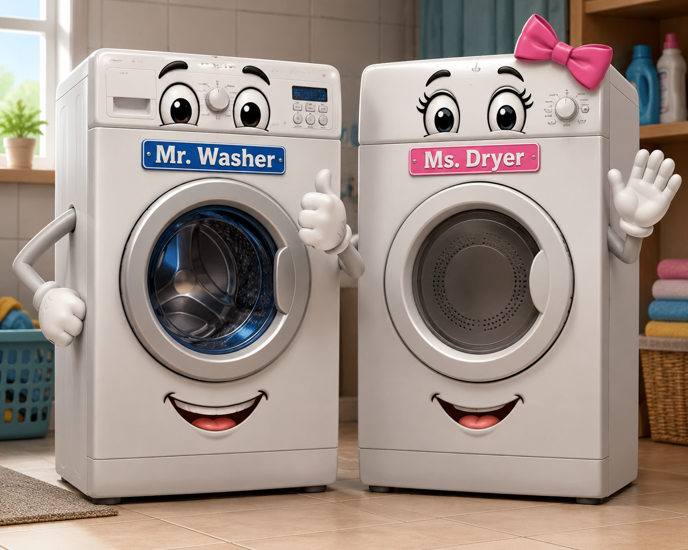

Harmony House Investigation Bureau (HHIB)
Episode 3: Possible Location of Ms. Mitt Identified...
Not Confirmed Though
Welcome back to Harmony House!
Every clue deserves attention.
Every observation matters.
But sometimes... a clue is only a clue.
It had been several days since Ms. Mitt's mysterious disappearance.
The investigation remained open.
Junior Detectives from different parts of Harmony House continued sending ideas to the Harmony House Investigation Bureau (HHIB).
Some believed she had gone on vacation. Others wondered whether she had accidentally been packed inside a storage box. One Junior Detective even suggested she might be hiding behind the toaster.
Chief Inspector Dr. Z carefully recorded every suggestion.
An urgent message arrived.
It came from Mr. A, HHIB's Assistant Inspector.
Mr. A: "Chief Inspector! I may have found something!"
Dr. Z: "Go on, Mr. A."
Mr. A: "I cannot confirm it yet... but I believe I have identified a possible location."
Within minutes, Dr. Z, Mr. A, and several curious household objects gathered inside the Laundry Complex.

Waiting there were Mr. Washer and Ms. Dryer.
Both looked surprised by the sudden attention.
Dr. Z: "Mr. A, please present your observations."
Mr. A pointed toward a very narrow space behind Mr. Washer.
Mr. A: "While inspecting the Laundry Complex, I noticed a narrow gap behind Mr. Washer."
"Something soft appears to be hidden there."
Everyone became very quiet.
Ms. Dryer: "Could it be...?"
Mr. Washer: "I honestly don't know. Nobody can see clearly behind me."
Mr. A continued his report.
"The object has approximately the right size."
"The colour also appears similar."
"However, visibility is extremely limited."
Dr. Z slowly nodded and wrote carefully in the HHIB notebook.
HHIB Observation
Possible mitten-shaped object observed.
Status: Identification not confirmed.
Just then, Ms. Red Apron arrived.
Ms. Red Apron: "Is the mystery finally solved?"
Dr. Z: "Not yet."
"Good investigators separate observations from conclusions."
Mr. Plastic Box, who knew many families throughout Harmony House—including the Pencil family, the Highlighter family, and the Paper Clip family—had also come to observe.
Mr. Plastic Box: "Should we announce that Ms. Mitt has been found?"
Dr. Z: "Absolutely not."
"At HHIB, we never announce conclusions before verifying the evidence."
"At this moment, we have only identified a possible location."
Mr. A looked a little disappointed.
Mr. A: "Unfortunately, I cannot reach behind Mr. Washer safely."
"A proper search and rescue operation will be required."
HHIB Investigation Update
Possible location identified.
Identity not confirmed.
Search and rescue operation pending.
Before leaving, Dr. Z addressed all the Junior Detectives.
Dr. Z: "Sometimes the biggest breakthrough is not solving the mystery..."
"...but discovering where to continue looking."
Everyone nodded.
Hope had returned.
Perhaps...
Just perhaps...
the missing twin oven mitt was patiently waiting behind Mr. Washer.
Or perhaps it was something completely different.
Only the search and rescue operation would reveal the truth.
Junior Detective Reflection
🕵️ Do you think the object behind Mr. Washer is really Ms. Mitt?
🕵️ What additional evidence should HHIB collect before announcing that the mystery is solved?
🕵️ Why is it important not to jump to conclusions?
🎨 Draw what you think is hiding behind Mr. Washer!
Case Status
🟡 Possible Location Identified
🔍 Identity Not Yet Confirmed
🚧 Search & Rescue Operation Planned
The investigation continues...
To be continued in Episode 4...